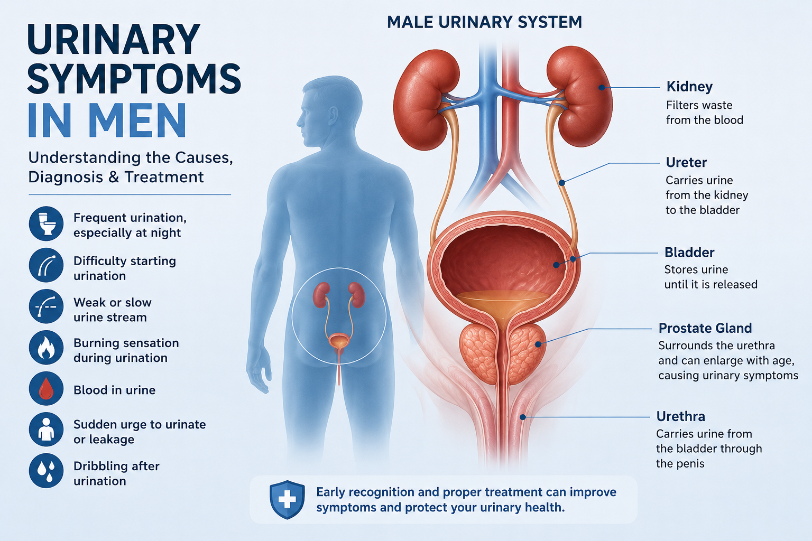

Top 5 Medical Tests Every Adult Should Do Annually
Regular checkups save lives — discover the essential tests that help you stay proactive about your health.
Read More →
How to Boost Your Immune System Naturally: 12 Science-Backed Ways
Your immune system is your body's defense mechanism against infections, viruses, and diseases.
Read More →
The One Blood Test Mistake Almost Everyone Makes (Including Some Doctors)
This mistake can mean the difference between catching a health problem early and missing warning signs for years.
Read More →

Gut Health and Nutritional Science: How to Support Your Body from the Inside Out
Discover how your gut influences your health and how nutrition can help maintain a healthy microbiome
Read More →
Autism in Africa: Understanding the Condition — With a Focus on Kenya
So far, no comprehensive population-level research on autistic traits has been undertaken anywhere in Africa
Read More →

Endometriosis Uncovered: Understanding the Condition Affecting Millions of Women
Explore endometriosis, its symptoms, diagnosis, daily life impact, and management strategies to help women improve quality of life.
Read More →
The Quiet Normalisation of Medical Self-Diagnosis in the Digital Era
At some point, often without noticing, many of us now respond to bodily discomfort the same way we respond to curiosity: we google.
Read More →

Do Hair Dyes cause cancer?
Hair colouring has become one of the most common cosmetic practices worldwide. Millions of people use hair dye to change their appearance, such as covering grey hair or following fashion trends.
Read More →

What Is Prediabetes?
Many people are living with rising blood sugar levels without knowing it because it often causes no obvious symptoms. This silent phase can go unnoticed for years, yet it presents a critical window where early action can make a real difference.
Read More →

Urinary Symptoms in Men: Causes, Diagnosis and When to Seek Medical Help
Many men experience urinary problems at some point in their lives, especially as they grow older. These changes may begin slowly and seem harmless at first.
Read More →

Tired but Can't Sleep? What You Should Know About Insomnia
You crawl into bed exhausted after a long day, expecting sleep to come easily. Instead, your mind refuses to switch off, and before you know it, you are staring at the ceiling while the hours tick by.
Read More →